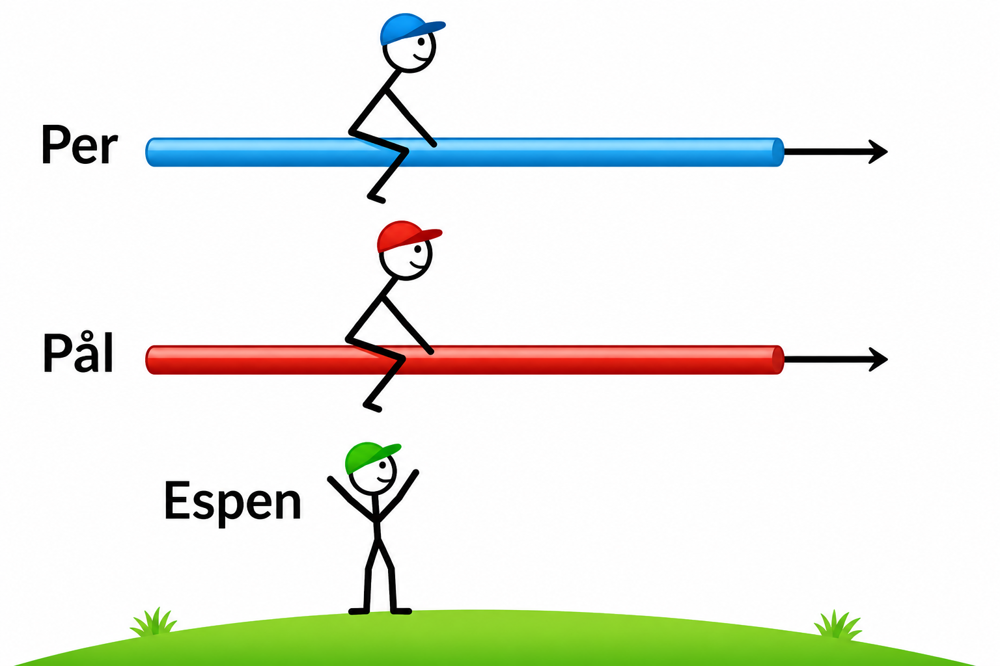

Per og Pål sitter på hver sin magiske tømmerstokk og flyr parallelt med ulik fart i samme retning forbi Espen.
Espen, som står i ro på bakken, måler at farten til Per gir en mindre lorentzfaktor enn farten til Pål.
Pål måler sin egen tømmerstokk til 8,0 m.
Hva er riktig?
